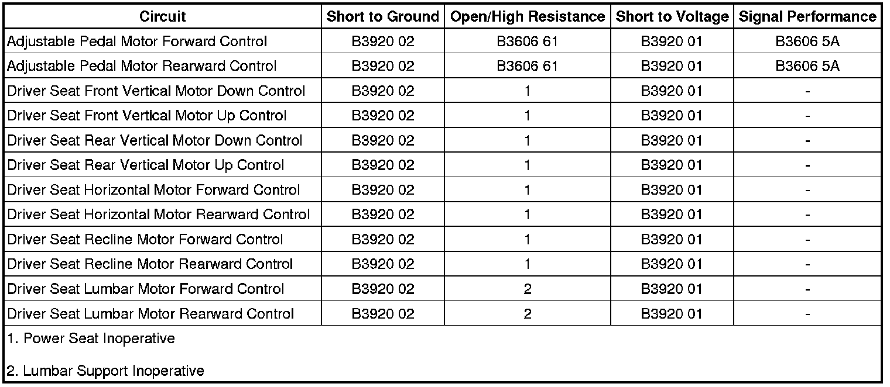

B3920
DTC B3920 or B3921
Diagnostic Instructions
* Perform the Diagnostic System Check - Vehicle (Initial Inspection and Diagnostic Overview) prior to using this diagnostic procedure.
* Review Strategy Based Diagnosis (Initial Inspection and Diagnostic Overview) for an overview of the diagnostic approach.
* Diagnostic Procedure Instructions (Initial Inspection and Diagnostic Overview)provides an overview of each diagnostic category.
DTC Descriptors
DTC B3920 01
- Group 1 Seat Motors Common Circuit Short to Battery
DTC B3920 02
- Group 1 Seat Motors Common Circuit Short to Ground
Diagnostic Fault Information

Circuit/System Description
The memory seat module (MSM) controls the seat, recline, lumbar, and adjustable pedal motors via half bridges that are connected to a power rail internal to the module. Power rail 1 includes of the following motors:
* Seat front vertical motor
* Seat rear vertical motor
* Seat horizontal motor
* Seat recline motor
* Seat lumbar horizontal motor
* Adjustable pedal motor
The MSM connects all of the motor control circuits on the power rail to a common reference point whenever they are not in operation. This reference point is biased to approximately 2.5 volts. The MSM checks to see if this reference voltage is shorted to ground or battery before enabling any seat, recline or lumbar motor.
Conditions for Running the DTC
All motor outputs for power rail 1 must be inactive for this DTC to set.
Conditions for Setting the DTC
B3920 01
The voltage on any power rail 1 motor control circuit exceeds 2.78 volts for 100 ms.
B3920 02
The voltage on any power rail 1 motor control circuit is below 1.47 volts for 100 ms.
Action Taken When the DTC Sets
The MSM will not allow operation of any motor on the power rail for which the DTC was set.
Conditions for Clearing the DTC
* The current DTC clears and will set to history, when the voltage is between 1.47 volts and 2.5 volts for 3 seconds and the ignition is cycled OFF then back to ACC or RUN.
* The history DTC will clear after 50 consecutive fault-free ignition cycles have occurred.
Diagnostic Aids
The memory seat module (MSM) may be referenced as the driver position module.
Reference Information
Schematic Reference
Driver Seat Schematics (Driver Seat Schematics)
Adjustable Pedal Schematics ([1][2]Electrical Diagrams)
Connector End View Reference
Component Connector End Views (Connector Views)
Description and Operation
Memory Seats Description and Operation (Memory Seats Description and Operation)
Electrical Information Reference
* Circuit Testing (Component Tests and General Diagnostics)
* Connector Repairs (Component Tests and General Diagnostics)
* Testing for Intermittent Conditions and Poor Connections (Component Tests and General Diagnostics)
* Wiring Repairs (Component Tests and General Diagnostics)
Scan Tool Reference
Control Module References (Programming and Relearning)
Circuit/System Testing
1. Ignition OFF, disconnect the X1 harness connector at the MSM.
2. Ignition ON, verify that a test lamp does not illuminate between ground and the motor control circuits listed below.
* Front vertical motor terminal 12
* Front vertical motor terminal 13
* Rear vertical motor terminal 15
* Rear vertical motor terminal 16
* Seat horizontal motor terminal 9
* Seat horizontal motor terminal 10
• If the test lamp illuminates, test the control circuit for a short to voltage.
3. Test for infinite resistance between ground and motor control circuits listed below.
* Front vertical motor terminal 12
* Front vertical motor terminal 13
* Rear vertical motor terminal 15
* Rear vertical motor terminal 16
* Seat horizontal motor terminal 9
* Seat horizontal motor terminal 10
• If not the specified value, test the control circuit for a short to ground.
4. Test for greater resistance values than specified between the motor control circuits listed below.
* 1 ohm between the front vertical motor terminal 12 and terminal 13
* 1 ohm between the rear vertical motor terminal 15 and terminal 16
* 1 ohm between the seat horizontal motor terminal 9 and terminal 10
• If less than the specified range, test the control circuits for a short together or a shorted motor.
5. Ignition OFF, disconnect the X4 harness connector at the MSM.
6. Ignition ON, verify that a test lamp does not illuminate between ground and the motor control circuits listed below.
* Lumbar horizontal motor terminal 12
* Lumbar horizontal motor terminal 13
* Seat recline motor terminal 15
* Seat recline motor terminal 16
* Adjustable pedal motor terminal 9
* Adjustable pedal motor terminal 10
• If the test lamp illuminates, test the control circuit for a short to voltage.
7. Test for infinite resistance between ground and the motor control circuits listed below.
* Lumbar horizontal motor terminal 12
* Lumbar horizontal motor terminal 13
* Seat recline motor terminal 15
* Seat recline motor terminal 16
* Adjustable pedal motor terminal 9
* Adjustable pedal motor terminal 10
• If not the specified value, test the motor control circuit for a short to ground.
8. Test for greater resistance values than specified between the motor control circuits listed below:
* 4 ohms between the lumbar horizontal motor terminal 12 and terminal 13
* 2 ohms between the recline motor terminal 15 and terminal 16
* 4 ohms between the adjustable pedal motor terminal 9 and terminal 10
• If less than the specified value, test the control circuits for a short together or a shorted motor.
9. If all circuits test normal, replace the memory seat module.
Repair Instructions
Perform the Diagnostic Repair Verification (Verification Tests) after completing the diagnostic procedure.
* Seat Adjuster Motor Replacement - Horizontal (Seat Adjuster Motor Replacement - Horizontal)
* Seat Adjuster Motor Replacement - Vertical (Seat Adjuster Motor Replacement - Vertical)
* Front Seat Recliner Actuator Motor Replacement (Front Seat Recliner Actuator Motor Replacement)
* Front Seat Lumbar Support Replacement (Front Seat Lumbar Support Replacement)
* Brake and Accelerator Pedal Adjuster Actuator Motor Replacement (LHD) (Brake and Accelerator Pedal Adjuster Actuator Motor Replacement (LHD))Brake and Accelerator Pedal Adjuster Actuator Motor Replacement (RHD) (Brake and Accelerator Pedal Adjuster Actuator Motor Replacement (RHD))
* Control Module References (Programming and Relearning)for MSM replacement, programming and setup